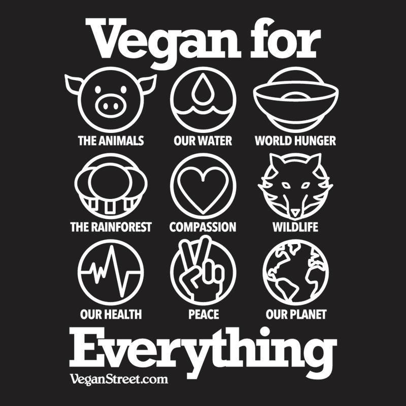

There are many reasons to go vegan. Whether it be for the animals, for your personal health, or for the environemnt it has never been easier to go vegan!
Click the link below for more details on why you should go vegan today:
Vegan Society - Why Go Vegan?